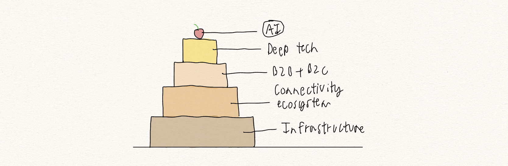

It's my first blog post - the formatting is rough... my coding experience in HTML is pretty elementary.
Was sitting in on a meeting with AAS (the CEO I work with) and a guy who came to pitch us his latest AI startup. Very interesting take AAS brought up. He described the tech ecosystem as a tiered cake (below is an illustration).

We obviously didn't invest in the business. But I've been thinking about that interaction a lot. Everyone's drinking the kool AI-d. Literally everywhere you look, there's AI this, NLP that. So many businesses, and economies (possibly even the one I'm in at this very moment) are making the mistake of focusing on the cherry on top, with no visibility on what's going on below it. Investing in the bottom tiers is equally if not more important. What do the bottom tiers look like? A flexible and robust infrastructure, a seamless wireless ecosystem, a portfolio of innovative consumer and enterprise solutions, and deep tech that's at the forefront of scientific advancements. Without these being fully built out, the entire cake is going to taste like chalk or topple over before it even makes it to the bride and groom.
P.S. This is the #1 thing I'm trying to implement at Astra Tech. Having a pretty AI-first communications and fintech app is very cool, but nobody is going to use it if it's clunky and not functional.